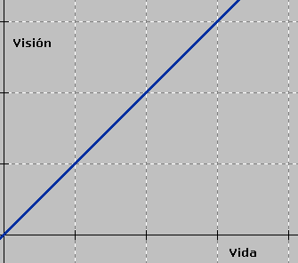
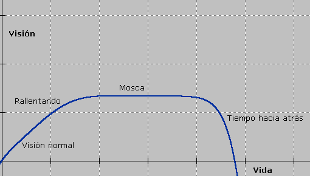

"Cualquier objeto nuevo será roto por el alumnado en un tiempo inversamente proporcional al costo del objeto". [Philosophiae Escolaris Principia Alumnathica, p. 201]
Est es brev: creo que no hay autoridad moral.
Si un ladrón me dice que robar está mal, tiene razón. Robar está mal. Si me lo dice, yo no le puedo replicar "pero vos sos un ladrón, no tenés derecho a decirlo". Eso es un verso. Si alguien dice algo que es verdad, no importa quién sea, es la verdad.
Creo que la palabra se explica sola, si nos atenemos a la etimología. Desde chico noté que la mayoría de la gente le temía a los números. Yo mismo les tuve miedo alguna vez...
Ejemplos de aritmofobia: la reticencia a hacer cálculos mentales como 56 - 37, el miedo de multiplicar 100 x 10.000 porque hay que pensar cuántos ceros quedan, la tendencia a sacar el 10% de un número con calculadora, el pensar que integrar una función es difícil antes de saber cómo se integra (después de saberlo opinemos, no antes).
Las raíces de la aritmofobia son los números que si se evalúan en aritmofobia dan 0... No, en serio, cuáles serán las raíces de la aritmofobia, me pregunto.
¿El hombre tiene una tendencia natural a evitar la exactitud, a no tener la paciencia para seguir los algoritmos para operar? No creo. Si no, no me figuro cómo surgieron Pitágoras, Fibonacci, Leibniz, Cantor, Euler, Gödel...
¿Acaso es que hay personas que nacen con distintas estructuras mentales que los hacen pensar y actuar de distinta manera? Podría ser... a mi no me gusta bailar, ni jugar al fútbol; entiendo que otro pueda sentir la misma indiferencia ante los números. Sin embargo, la matemática es una herramienta que el hombre mismo inventó para aplicar al mundo. La idea, considero, es que los números puedan usarse para todo. (Aunque algunos filósofos formalistas crean que los matemáticos deben ocuparse de la matemática y no de sus aplicaciones, esta visión está lejos de la realidad, porque el estudio de la matemática usa a la matemática misma como herramienta). Me parece, entonces, que todos deberían saber usar los números para su bien; el miedo hace que no se los pueda usar at all. De la misma manera que aunque no me gustan mucho las actividades físicas comprendo que toda mi vida voy a estar encerrado (en el buen sentido) en mi cuerpo y por lo tanto debo establecer una buena relación, saludable, con él.
Otra opción es que la aritmofobia no sea una cuestión genética sino cultural. Acaso los padres y las maestras de futuros aritmófobos impartan una mala educación (no de mala fe), que provoque el odio a la materia. A las pobres profesoras de matemática siempre se las acusa de inhumanas, viles, forras, cuando son de las pocas que tienen algo de coherencia (ver Sdnalklaf) (hay otros que tienen coherencia, lo reconozco). Otra cosa mala es que hasta muchos de los mismos profesores de matemática prometen dificultad, cuando eso ayuda a fomentar cucos. Primer día de clases: "yo sé que esta materia es difícil..." al pedo. Los primeros días de clases el índice de aritmofobeidad crece. Después de todo, en muchas casas los padres "perdonan" a los hijos si no aprueban esa materia, cuando son muy severos con el resto. La gente siente que no es culpable si es mala en matemática, y se excusa diciendo "no... yo soy muy malo para los números", y casi sintiéndose orgullosos. (Si vuelven a insistir en que yo no bailo ni juego al fútbol, es cierto, pero es porque no lo disfruto; mi excusa no es que bailo mal; por otra parte, ver Autoridad Moral). Cuando yo elegí la modalidad de comunicación, arte y diseño, muchos me preguntaban por qué esa en lugar de gestión, porque sabiendo que a mí me gustaba la matemática creían que me había ido a "la fácil". Y lo de "fácil" es porque "hay menos matemática". Es iluso creer que la economía tiene más matemática que el arte. No digo que la economía no tenga, y no soy exhaustivo; pero con mencionar a Leonardo, Bach, Escher o el número áureo creo que es suficiente.
Hay una inercia mental que romper, eso lo creo.
Soluciones para la aritmofobia: (yo sé que raíces y soluciones a veces son sinónimos, pero no aquí...) No sé qué se podrá hacer para resolver la aritmofobia. ¿Habrá que enseñar las cosas más en concreto? No sé. La matemática verdadera no es concreta; se puede aplicar a cosas concretas pero se trata de manejar casos generales para después aplicarlos a casos particulares. ¿Habrá que partir de casos particulares para inducir? ¿El método debe ser mecánico o razonado? (Opto por la segunda; como diría el profesor de física del CBC... "Hay dos formas de poner el signo: mecánicamente, y entonces sale solo, o a mano. Yo prefiero pensar en lo que estoy haciendo. Ustedes pueden hacerlo de la forma que quieran, pero no mezclen las dos...", discurso con el que nos hartó todo el cuatrimestre).
"The worst enemy of the nails is the hammer".
Este escrito va en respuesta a un amigo, quien me dijo que los colores no eran continuos (ver Percepciones) porque dependen de los colores de los elementos, que son limitados.
»La verdad es que no había tenido en cuenta la posibilidad de la que hablás. Tenía entendido que cada elemento tenía su color característico, pero no tenía ni idea de que la frecuencia fuera proporcional al nivel de energía ni de todos los detalles técnicos.
»Más allá de que los ojos mortales puedan diferenciarlos o no (ya sé que nadie arguyó eso..., pero lo aclaro por si acaso): estás hablando de los colores "prácticos": los que dependen de la materia que existe en el universo. En ese aspecto tenés razón.
»Ahora, hablando de los colores teóricos: el color depende de la longitud de la onda de la luz. Si la longitud de onda de la luz para un color mide A y la longitud de onda para otro color mide B, siempre van a existir infinitos números entre A y B como longitudes de onda; de donde se desprende la continuidad de los colores.
»También es posible que me digas "pero la luz viaja en cuantos y hay longitudes de onda que nunca se pueden alcanzar". Esa es una diferencia mucho más profunda todavía. Y ahí no sé si vale la pena discutirlo o no, creo que entramos en la metafísica. Si el color es un ente en sí mismo, entonces coincidiría con mi convicción "religiosa" de que son continuos. Si el color es solamente un fenómeno que se desprende de la luz, deberían ser discretos.
»Al respecto de la luz, leía hace poco: la luz no se comporta en ondas ni en partículas. La luz se comporta como se comporta. Ocurre que al hombre, experimentalmente, le conviene pensar en ondas o partículas que son cosas que conoce bien.
»Hablando de metafísica... ¿Dios puede hacer una piedra tan pesada que él mismo no la pueda levantar?
Otro de los temas a los que recurro (vuelvo una y otra vez): ¿pueden las máquinas tener consciencia?
Yo creo que sí. Mi perro no vuela, y no es factible que haya perros voladores. Sin embargo, aunque nadie escribió un poema acerca de mis codos, puede existir. No pregunto si las máquinas tienen consciencia. Porque hoy no la tienen. Lo que pregunto es si son como los perros voladores o como un poema acerca de mis codos.
Quizá el hombre nunca pueda hacer una máquina que grabe los sueños y los reproduzca, pero convengamos en que en teoría puede hacerse, porque los sueños surgen de procesos químicos en el cerebro que dan lugar a las percepciones nocturnas. Tampoco estoy preguntando si las máquinas con consciencia se harán algún día. Quizá, como la dream-recorder, el hombre nunca pueda hacerlas.
Hay quienes piensan que el aborto atenta contra la vida humana, y por lo tanto debe ser delito; también hay muchos que consideran que clonar humanos sería algo terrible. Pero el aborto existe, hay gente que lo hace. Y la clonación de humanos [al momento de escribir, creo que] todavía no se llevó a cabo, pero podría realizarse.
Tampoco pregunto si está bien o está mal que las máquinas puedan llegar a tener consciencia. Es decir: me interesa mucho discutir si está bien o está mal. Pero aunque uno piense que clonar humanos no es correcto, debe admitir que es factible.
Aunque máquinas con consciencia pudieran tener "consecuencias pavorosas" lo que quiero es saber si pueden existir o no.
Ahora argumento: entiendo que muchos van a decir "las computadoras hacen lo que se les indica, por lo tanto nunca va a poder hacerse nada que no se les indique; las computadoras nunca van a poder [por ejemplo] componer poemas o enamorarse". Con el hecho de que las computadoras hacen lo que se les indica estoy de acuerdo. Pero ocurre que las consecuencias no son tan fácilmente predecibles.
Todas nuestras células, todas, funcionan de acuerdo a procesos (macroscópicamente) predecibles y deterministas. De modo que los hombres también hacen "lo que se les indica" (nuestras neuronas funcionan de acuerdo con las leyes de la física, ¡no puede pasar algo distinto!).
Sin embargo, los humanos componen poemas y se enamoran. Cuando yo tengo una duda o me equivoco, lo que se equivoca es mi software, no mi hardware.
Por ejemplo, si no me decido entre una empanada de jamón y queso o una de carne, lo que no se decide es mi "mente". ¡Mis neuronas no dudan! Mi cerebro se comporta de acuerdo a reglas preestablecidas. Dudar o equivocarse no es un "error" verdadero: forma parte de la naturaleza del pensamiento.
De la misma manera, el procesador de una computadora con consciencia no se equivocaría ni dudaría. Lo que podría llegar a dudar es el programa que se encarga de la mente.
Hay muchas actividades humanas diferentes, pero mentalmente (softwaremente) todo se reduce a símbolos o unidades de pensamiento, que se relacionan unas con otras. ¡Las relaciones son complejísimas, lo admito!
Pero tanto las neuronas como algún otro dispositivo físico son capaces de almacenar esos símbolos. Puede faltar (y falta) teoría. Falta velocidad. La forma de pensar de un ser humano siempre podrá ser traducida a software.
Los hombres no piensan sobrenaturalmente; tienen métodos de hacer las cosas, muchas variables y funciones y estados. Pero todas ellas son cuantificables y separables en pasos. Más técnicamente, cualquier forma de pensar de un humano será traducible en un algoritmo programable en un lenguaje (de programación) lo suficientemente potente (con recursividad).
Por alguna razón, un tipo conoce un número y sabe/cree que encierra algún misterio muy importante.
Busca distintas cosas con ese número (un teléfono, un número de documento, una ley, la patente de un auto, la dirección de una casa, una combinación de latitud y longitud, una fecha, un código de artículo, y cualquier otra cosa que pueda tener un número que se les ocurra) y en cada una de esas cosas encuentra algo que parece ser el misterio pero no es. O algo así (también puede no parecer el misterio y serlo, o que todas apunten hacia lo mismo, o no sé qué).
Prueben lo siguiente, y si a alguien se le ocurre cómo pintar lo que ven, cuéntenmelo. (Yo pienso en una posibilidad):
Ubíquense delante de una imagen, a un metro está bien. Sitúen su dedo a unos diez centímetros de sus ojos, justo enfrente del entrecejo. (Orienten el dedo verticalmente, como apuntando hacia el cielo).
Ahora, enfoquen su vista en la imagen de atrás, no en el dedo.
Lo importante es que la imagen de atrás se ve completa, no hay partes que estén tapadas por el dedo. Sin embargo, el dedo se ve, está ahí. ¿Cómo puede ser que veamos dos cosas al mismo tiempo, sin que se tapen? (Obviamente, porque tenemos dos ojos, y no uno solo).
Lo que trato de decir es que no hay cuadros en los que se pueda representar esto, porque si se pinta la imagen completa no puede estar el dedo, y si se pinta el dedo, alguna parte de la imagen se debe tapar.
Una solución posible es pintar dos cuadros, uno representando lo que cada ojo ve, y haciendo que el espectador mire uno con cada ojo. Dalí lo hizo y en una exposición a la que fui estaban los dos gigantescos cuadros casi iguales. No pude ver nada...
Mi abuela tiene unas fotos sacadas así, que se ven con unos binoculares especiales y son re-tresdé.
En mi opinión, es clara la tendencia de que los dioses en las religiones suelen disminuir en cantidad a partir de la evolución de las civilizaciones (evolución como paso del tiempo, no hablo de ideas mejores o peores porque es claro que la Santa Inquisición no es más civilizada que el teatro griego o, como dice Sábato en Sobre Héroes y Tumbas, "¿qué es más civilizado?, Aristóteles en trirreme o Landrú en ferrocarril?").
En un comienzo, los hombres eran panteístas: el universo es dios y dios es el universo. Todas las cosas son deificadas. Es la magia, la religión oscura de los comienzos.
Durante el paso del tiempo, comenzaron a tener un dios para cada cosa pero el dios no es la cosa, sólo la representa. Son las religiones tribales, de Africa la adoración a los ídolos. Se hacen ofrendas a cada uno de los dioses. Los humanos se deifican en algunos casos.
Con el paso del tiempo, se pierden algunos dioses, quedando sólo los principales, los estereotipos de los dioses. Se concentran las fuerzas en unas mínimas. Es el politeísmo, plasmado en los bellos mitos de los griegos y los romanos.
Las civilizaciones más recientes aún, concentran aún más las fuerzas, quedando entonces las reducciones al bien y el mal, la creación y la destrucción. Son las religiones asiáticas, de China e India.
Un estado aún más moderno es el reducir las deidades a una única, omnipotente, omnisciente y omnipresente. Es el monoteísmo de los judíos, los musulmanes y los cristianos.
Sin embargo quedan rastros de antiguas creencias en la modernidad... el uso de amuletos, las ofrendas, la adoración de los ángeles, las vírgenes y los santos son pistas irrefutables. El diablo se representa con cuernos porque en las religiones politeístas se adoraba a dioses con cuernos, a los toros, a las cabras. Los monoteístas en un intento por alejar a sus fieles del "mal camino", crearon a un diablo con cuernos para que creyeran que las religiones de otros pueblos eran satánicas.
Estados aún más avanzados son el agnosticismo y el ateísmo, la creencia en ningún dios o la duda de su existencia. Pero todos están equivocados.
¡Hay -1 dios!
Una teoría mía algo vieja, ya. (ver Imperio del Azulejo).
Si el mundo es una compleja red formada por variables (valores que indican como éste es), y fuerzas de acción (diversas fuerzas que provocan que los valores de las variables, y por lo tanto el estado del mundo, cambien); entonces el azar no existe.
Si uno arroja un dado, puede suponerse que es el azar el que interviene. El azar y por lo tanto todas las ciencias con este relacionadas, como la probabilidad en primer plano, no existe sino en el mundo de las ideas. En el mundo de la realidad puede diferenciarse el azar en tres principales:
Si basamos éste en la elección por medios físicos (como el dado), todo estará determinado por las fuerzas de acción y las variables. Si basamos el azar en la intervención de un ser vivo, este dependerá de la condición temporal del sujeto además de las fuerzas de acción y las variables. Si basamos el azar en medios lógicos, como el uso de tablas de números al azar y complejos algoritmos, este dependerá de la forma de la tabla y los algoritmos. Incluso si el tercer método estuviera basado en el tiempo (fecha, día, hora, etc.), el azar dependerá del tiempo, que es una variable más en el mundo.
Analicemos ahora el dado. Antes de soltarlo (en una mano humana), el dado puede estar en diversas posiciones. Influye también la zona de la mano en la que esté, como se ubica esta, si el dado sólo se suelta o si se arroja con impulso, la distancia a la que esté del lugar en el que debe caer, la presencia o no de viento, lluvia, etc., el material del lugar en el que debe caer, la zona del mundo en la que se está (esto varía la fuerza de gravedad que la Tierra (o el planeta en cuestión) ejerce sobre el dado), si el dado está equilibrado o no, si los puntitos de los lados están dibujados o calados (lo que, aunque muy despreciablemente, cambia el peso de las distintas partes del dado) y, para terminar con la lista, la fuerza de gravedad que ejercen todos los demás objetos, desde un mosquito que esté a diez mil kilómetros de distancia hasta un asteroide que esté por chocarse con Júpiter. O sea, si tenemos en cuenta todos estos factores, podemos decir sin ninguna duda cuál es el número que va a salir... Si acciones como lo son arrojar un simple dado son imposibles de evaluar para un ser humano, es obvio que otras, tan complejas como el desarrollo de un partido de ajedrez, política internacional y neurología nos parezcan casi inalcanzables e inabarcables.
Pero no es razón esta para creer en fuerzas superiores que "harán que saque un seis en el dado si sacrifico una vaca a rayitas blancas y negras en ayunas cuando salga la primera estrella durante el día del equinoccio de otoño del año en que cada habitante de nuestro pueblo se haya tropezado con una piedra rosa exceptuando al padre de la última persona que sacó un cinco en el dado (por cierto, esto lo obtuvo el cinco haciendo que...)".
Concluyo que:
El universo funciona de una manera razonable; los humanos somos los incapaces de verlo.
Las variables que hacen funcionar al mundo son tantas, y las fuerzas de acción son tan variadas que al combinarse producen un resultado aparentemente azaroso.
No hay azar, hay ignorancia.
Esto forma parte de una conversación acerca del conocimiento y de por qué el hombre quiere conocer.
Antes de hablar seriamente, me gustaría plantearles una explicación (en joda) de por qué los científicos no tienen fondos. No es mía, si no entiendo mal es del mismo autor de "Dilbert".
Partamos de dos afirmaciones básicas:
"El conocimiento es poder"
"El tiempo es dinero"
Reexpresémoslas en lenguaje matemático:
conocimiento = poder tiempo = dinero
Teniendo en cuenta que poder = esfuerzo / tiempo:
conocimiento = esfuerzo / tiempo
Como tiempo = dinero:
conocimiento = esfuerzo / dinero
Despejo dinero:
dinero = esfuerzo / conocimiento
Concluyendo que el dinero es inversamente proporcional al conocimiento... (a más conocimiento, menos dinero).
Ahora volviendo al tema original, creo que nuestra sociedad occidental es demasiado maniquea. Esto es decir: no toleramos las contradicciones y estamos sujetos a una lógica binaria, en la cual todo se evalúa con 0/1, sí/no, blanco/negro, bueno/malo. Según leí, algunos creen que hay afirmaciones superficiales (aquellas que son o bien verdaderas o bien falsas) y verdades trascendentales (aquellas que son verdaderas, pero cuya negación es verdadera también). Por ejemplo, "Argentina es un país de América" es una verdad superficial. En cambio, "la vida es corta" es una verdad profunda, porque si bien no es difícil estar de acuerdo con ella, tampoco es difícil admitir que "la vida es larga".
También pueden considerarse verdades trascendentales aquellas que deben analizarse mediante lógica difusa. Por ejemplo, las clásicas "¿al sacar qué grano de arena un montón deja de ser un montón?" o "¿en qué momento un leño pasa a ser un leño quemado?".
Los budistas afirman que el conocimiento provoca deseo, el deseo provoca sufrimiento y el conocimiento aplaca el sufrimiento. Esto es una suerte de rueda de la vida: por un lado, el conocimiento nos hace desear cosas que antes no habríamos imaginado; por otro, es el verdadero saber el que puede hacernos desprender de las cosas materiales y superar las pulsiones mundanas.
A nuestros oídos occidentales esto suena como una contradicción. "¿Cuál es la verdad?, ¿provoca el sufrimiento, o lo aplaca?". Mu. Ni lo uno ni lo otro: aprendamos a tolerar las verdades trascendentales.
Pero como bien dice Lucas, el no saber es un callejón sin salida, y ¡hay tantas cosas maravillosas ahí afuera! Yo escojo el saber.
En alguna ocasión discutí si el conocimiento acumulado formaba parte de la inteligencia (yo pienso que no). Pero lo que se puede hacer estudiando es acumular conocimiento acerca de verdades superficiales ("esto es verdadero, aquello es falso"). A las verdades trascendentales sólo se puede acceder mediante la inteligencia. Nadie nos puede enseñar cuál es el sentido de la vida.
Alguna vez me dijeron que a mí me encantaba contar con que sabía cosas que los demás no sabían. Por un lado es verdad. Al menos en mí hay algo de elitismo. Pero este elitismo no me ciega creyendo que sé más que otros, ni me impulsa a quedarme con lo que conozco para mí mismo.
De todas formas, en mi caso particular predomina el deseo de superarme a mí mismo en materia de conocimientos a la hora de saber o no saber. Y además, el acto de aprender me resulta entretenido.
Esto me lleva a otra idea: en algún momento de nuestras vidas, sea para lo que fuere, tendremos que aprender algo nuevo. Si no sabemos aprender, será difícil que lo hagamos, justo en el momento crítico.
Sé que se ha abusado de la expresión "aprender a aprender" (y en desmedro del contenido) en las escuelas. Pero si no sabemos leer, ninguna enciclopedia sirve. (Y no me hablen de enciclopedias en video).
Volviendo una vez más a lo de "cheto" [discutíamos acerca de por qué términos como "cheto" o "villero" se usan despectivamente]: en "La era del vacío" de Gilles Lipovetsky (que una profesora nos hizo leer en el colegio), el autor sostiene que para salvaguardar la identidad se necesitan fronteras. Éstas deben definir quiénes son como nosotros y quiénes son forasteros: al forastero se le teme y se lo odia. La xenofobia sirve para configurar una identidad.
En el pasado, estas fronteras estaban determinadas por barreras geográficas. En la Edad Media, todo el que vivía fuera del castillo era forastero. Más tarde, los extranjeros lo fueron. Hoy en día, debido a la globalización, las barreras físicas se han vuelto obsoletas. Ante la despersonalización que esto ocasiona, los individuos tienden a formar tribus urbanas: grupos que se identifican "profesando" una subcultura. La pertenencia o no a esta tribu es la que determina la "forasteridad".
Palabras como "cheto" son usadas dentro de una subcultura para designar a miembros de otra. El objetivo final de esto es la preservación de la identidad. Como dice Tepli, "hay inseguridades, y surge la necesidad de distinguirnos de los demás".
En cuanto a lo de cagar o no cagar, concuerdo con Facundo: te pueden cagar siempre y ningún conocimiento será auxiliar.
También me gustó la expresión "el mundo interno se precipita a la entropía a medida que sabemos cada día más". Eso es algo que siento profundamente. Nuestra mente que trata de defenderse del caos creando órdenes artificiales se satura de información y se hace difícil pensar.
Citando, otra vez, a Borges: pensar es olvidar diferencias. Cuanto más experiencia acumulamos nos volvemos más Funes, llenos de recuerdos (o conocimiento, para el caso es lo mismo) pero incapaces de relacionarlos.
Recuerdo haber sentido una terrible imposibilidad para pensar el 11 de septiembre de 2001. Ante tanta información junta, ese cambio repentino en mi imagen del mundo (y no lo digo sólo por las torres), recuerdo haber tratado de sacar conclusiones o elaborar hipótesis sin lograrlo.
El título ya describe todo... pero piensen un poco en ese libro...
En el libro está el hermano que nunca tuve.
Está la foto de mi perro volando en Marte.
Están todos los libros que no se escribieron.
Está el color que nunca nadie vio.
Están todas las clases de insectos que no aparecieron.
El bostezo que no diste esa mañana de marzo.
Los nombres de todas las estrellas del universo a las que nadie le puso nombre.
Y los de todas las estrellas que no están en el universo...
Está la música que Mozart nunca compuso.
Y la letra que Colón no le puso a esa música.
Todas las obras que ningún ser humano hizo.
Y los diccionarios de los lenguajes sin inventar.
Muchos diríamos que Dios aparece en ese libro...
En el libro tienen que estar las líneas que no aparecen en el libro...
En el libro está la parte del libro que detalla toda mi vida. (Porque esa parte del libro no existe (porque yo sí existo)).
En el libro se menciona la parte del libro que describe centímetro a centímetro tu habitación, durante cada segundo del año.
Y bueno, referencias a partes del libro que hablan de todo lo real, que es fácil de imaginar: caballos corriendo en las estepas (como en el Aleph), millones de ejemplares de diarios de todos los días, las conversaciones de toda la humanidad y banalidades por el estilo.
Lo más terrible o fascinante de todo es: para cada artículo A del libro, como A existe, no hay en el libro un artículo B que diga que A no existe. ¡Entonces tiene que haber un artículo C que diga que B no existe!
Y como C existe, no hay en el libro un artículo D que diga que C no existe; por lo cual debe estar el artículo E que dice que D no existe.
Y así. Indefinidamente.
¿Cómo simular la evolución? Es la pregunta.
Yo creo que al igual que existe una teoría de la probabilidad o la teoría de juegos, en matemática, también debería existir una teoría de la evolución. No en el sentido biológico, sino en un sentido abstracto, aplicable a la biología pero también a otras ramas del conocimiento humano.
Por ejemplo, las poblaciones son conjuntos, y hay individuos. Debe haber una función (tengo síndrome de abstinencia si no las menciono) que exprese cuán ventajosa es la situación de un individuo. Al azar se efectúan modificaciones (la cosa es, ¿qué modificaciones?) sobre el individuo, sin tratar de ajustarse a los resultados óptimos. Recién después de aplicar los cambios debería evaluarse nuevamente la ventajosidad del individuo para ver si sobrevive o no.
Es un quilombo, porque la función que determina la ventajosidad puede cambiar. Además debe ser una teoría. En general las teorías dicen algo más que esto y yo no soy ni Pascal ni Nash.
Sin embargo, si alguien tiene la voluntad, podríamos tratar de hacer alguna definición...
Probablemente un individuo deba ser un vector con las propiedades relevantes del individuo:
i = (p1, p2, ..., pn)Una población P estará formada por individuos:
P = {i / i = (p1, p2, ..., pn) }
S(i) será la función de selección que devuelve un real entre 0 y 1, donde 0 es la condición pésima y 1 la óptima.
S(i) : P -> [0; 1]
E(i) es la función que hace evolucionar a un individuo, al azar.
E(i) : P -> P
A partir de una población, se obtiene una población evolucionada aplicando la función de evolución:
P' = { E(i) / i -> P }
La nueva población Q se depura con la función S, por ejemplo así:
Q = { i perteneciente a P', si S(i) > 1/2 }
Y así indefinidamente. Si se aplicara la teoría, debería servir para hacer evolucionar cualquier sistema. Y como siempre, si se mira el mundo con un paradigma, todo se puede ver así.
El otro día vi un documental en el que se hablaba, como bastante se acostumbra en dicho ámbito, de fantasmas, psicoquinesis y vida después de la muerte. El sketch (porque el "bloque" casi parecía una joda) de vida después de la muerte no me pareció demasiado interesante.
Por ejemplo, comentaba que un tipo había muerto de balazos en el pecho y semanas más tarde nació alguien que hubiera sido primo suyo (es decir, si hubiese estado vivo), quien tenía una marca de nacimiento en el mismo lugar en que el muerto había recibido las balas y varios otros casos por el estilo (algunos un poquito más convincentes). Pero, yo digo, "¿por qué no puede ser una casualidad?" Me responderán: "Es demasiado exacto como para ser una casualidad.", pero piensen: cuántas personas nacen y mueren sin tener marcas de nacimiento relacionadas con la muerte de otra. (Para un ejemplo un poco más concreto: están de vacaciones en un lugar más o menos lejano y se encuentran con un vecino, "qué casualidad", pero piensen en todas las personas que se cruzaron y no eran vecinos).
Después vino el sketch acerca de los fantasmas, que me pareció bastante mejor. ¿Sabían que en los Estados Unidos (de donde procedía el documental), hay 1.000.000 de supuestas casas embrujadas? La típica pregunta era "Existen realmente los fantasmas", y los tipos dieron una explicación que me gustó (de escéptico que soy, nomás). Según la explicación, la Tierra tiene ciertas zonas que tienen una fuerza magnética (la fuerza geomagnética) más alta. Y las casas están construídas con ciertos materiales altamente magnetizables (como por ejemplo los ladrillos que contienen ferrita y otros minerales).
Entonces, los ladrillos funcionan como si fueran una cinta magnética grabable (de hecho, los cassettes de audio contienen ferrita) y la fuerza geomagnética funciona exactamente igual a una grabadora de dichas cintas. Imaginen que una casa vive una familia de (sólo por decir algo, no influye en nada) cinco integrantes. Ellos viven como acostumbra toda familia, duermen, comen, hablan, entran y salen. Si se encuentran en una zona de la Tierra con gran fuerza geomagnética, su comportamiento puede quedar grabado en los ladrillos en forma similar al de un cassette de audio (y, por qué no, de video). Años más tarde, otra familia ocupa la misma vivienda. (¿Tampoco es necesario que sea otra familia, no?). La cosa es que hay individuos que tienen percepciones un poco más agudas (esto no significa mucho, salvo que sienten un poco más que otros; no hay nada sobrenatural en esto).
Dichos individuos tienen cerebros que pueden funcionar como una reproductora de cinta magnética, y de esta manera, ver el comportamiento que quedó grabado en los ladrillos.
Esta reproducción serían los fantasmas de los que tantas veces se habla.
Generalmente las zonas de alta energía geomagnética coinciden con las zonas en que se ven fantasmas. Entonces: "¿Existen los fantasmas?". Si hablamos de simples reproducciones de ladrillos, podemos afirmar que es muy probable. Si por el contrario hablamos de los espíritus de los muertos que vuelven para visitar a los vivos, no, no existen.
Es la filosofía de una cultura que inventé. Si bien estoy de acuerdo con algunos de sus principios, es la filosofía de ellos, no la mía.
Empecemos por lo básico. ¿Qué existe?
Cualquiera osaría afirmar que la mesa que ve, la mascota que a diario acaricia y la fruta sabrosa que deleita existen.
Pero ¿qué hay entre la mesa de roble (y el perro, y la pera) y uno? Sencillo: la visión, el tacto, el gusto de esos objetos. En una palabra: la percepción.
¿Qué existe entonces (ahora que sabemos que la percepción se encuentra entre el objeto percibido y el sujeto, que percibe)? Desde luego, nuestras percepciones pueden estar engañándonos. Si yo tengo un guante puesto en la mano e intento reconocer la temperatura de un objeto tocándolo con esa mano, terminaré pensando que todo tiene la misma temperatura e, incluso, la misma textura. Es probable que, efectivamente, estuviésemos tocando objetos con idénticas temperatura y textura; pero sería eso: una probabilidad.
Comenzaremos entonces por asumir que no podemos afirmar la existencia de los objetos que están filtrados por nuestras percepciones. De lo que sí podemos estar seguros es de la existencia de las percepciones, en sí mismas.
¿Qué quiere esto decir, realmente? Que la mesa, el perro y la pera acaso existen, pero también es probable que no existan (más probable sería que existan en una forma completamente distinta a la que nosotros podemos percibir; pero a eso volveremos más adelante). Pero lo mismo da. Lo relevante es que mi percepción de la blancura de mi perro (y de la rugosidad de la madera de la mesa, y de la dulzura de la pera) sí existe.
No quedándonos con aquello, la afirmación tiene una importancia aún mucho mayor, puesto que de acuerdo a ella, el resto de las personas puede o no existir (aunque sí existe mi percepción de ellas). Incluso, aunque puedo aseverar que mi percepción de mí existe, yo puedo o no existir.
Pero se nos presentan ante esta afirmación dos grandes dificultades.
Trataremos primero de una de dichas dificultades, que es la siguiente: ¿cómo se dan los sentimientos, los pensamientos y la conciencia? Los tres puntos de la problemática apuntan hacia el mismo conflicto básico. Si bien puede negarse la existencia de lo que se encuentra fuera de mí, y aceptarse esto con relativa sencillez, negar que exista algo que está en mi interior es un paso mucho más difícil (aunque, a su tiempo, se verá que los sentimientos, los pensamientos y la conciencia también se encuentran fuera de nosotros).
De momento admitiremos que todos los fenómenos mencionados provienen de nuestro interior, y los agruparemos bajo el nombre de pensamiento.
Tenemos entonces percepciones que provienen desde el exterior y el pensamiento en nuestro interior. Desde luego, el pensamiento se ve influido por las percepciones. Dejar de sentir y reflexionar acerca de lo percibido (en cada momento o alguna vez) es excepcional.
Analicemos pues las funciones que cumple el pensamiento (aunque la división presente sea arbitraria, y de hecho todas las divisiones lo son, puede sernos útil a efectos de conocer el pensamiento paso a paso).
Podríamos decir que el pensamiento cumple la función de división. Por ejemplo, si percibimos un matiz rojo y uno azulado, somos capaces de dividir y así diferenciarlos. Pero en realidad dicha división no es exclusiva del pensamiento, puesto que si logramos hacer diferencia entre ellos es debido a que existe alguna diferencia, intrínseca, en la percepción. ¿Cuáles son entonces las funciones que cumple el pensamiento? Por sobre todo son tres: la agrupación, la relación y la abstracción.
Comencemos por la agrupación: hemos dicho que somos capaces de diferenciar un matiz rojo de uno azulado; pero ¿acaso diferenciamos todos los matices que en la percepción tienen diferencias intrínsecas, unos de otros? Por supuesto, no: nuestro pensamiento ha olvidado diferencias y somos capaces de incluir en la categoría azul a colores que se mueven a través de diversos matices (por ejemplo azul marino, azul cerúleo, azul Francia) y luminosidades. Ya el concepto de matiz es una agrupación, y también lo es el de color. Podemos llamar mesas a objetos de diferentes formas y tamaños, materiales y colores, ubicados en diferentes marcos de espacio y tiempo.
Pero esto no queda allí; la misma pera es una agrupación de una cierta forma, y sabores, olores y colores determinados. Las personas que conozco no son más que una agrupación que mi pensamiento desarrolla sobre mi percepción. Incluso yo soy una agrupación de percepciones. Y también hemos agrupado todos los posibles olores bajo las percepciones olfativas y todos los posibles sonidos bajo la categoría de percepción auditiva. ¿Cuál, entonces, es el resultado de agrupar todas las percepciones?; pues, precisamente, la percepción. De aquí en adelante hablaremos siempre de percepción.
Si continuamos con el resto de las funciones del pensamiento nos encontramos con la relación. Esta es una sencilla función que relaciona a las percepciones con otras percepciones, y con otras creaciones del pensamiento. Verbigracia, asociamos el conjunto de sonidos /'mesa/ con la agrupación de todas las mesas. El lenguaje y todos los sistemas de símbolos creados por el hombre son por excelencia relaciones.
Por último, muy importante es la función de abstracción. Ejemplifiquémosla del siguiente modo: es para nosotros posible percibir tres manchas. Es también factible la percepción de tres sonidos o de tres objetos de iguales o diferentes tamaños, y con rugosidades variadas y diferentes temperaturas. Pero el tres, la concepción de esa cantidad, no es perceptible. La abstracción es entonces la creación de una unidad de pensamiento, posiblemente a partir de una percepción, pero no perceptible. A su modo, la agrupación y la relación son también formas de abstracción, pero como se ha dicho, esta misma clasificación es arbitraria (varias agrupaciones relacionadas).
Es importante destacar cuán relevantes son las abstracciones en nuestra vida:
Nosotros percibimos, es cierto, una serie de colores a cada momento, y sonidos con varias intensidades que parecen provenir de distintos ángulos. A partir de esta serie de elementos construimos la abstracción del espacio. ¿Existe el espacio? Como ya se vio, esto no se puede responder certeramente. Pero ¿existe acaso nuestra percepción del espacio; de la izquierda y de la derecha, de un arriba y un abajo? Observamos que responder afirmativamente también sería demasiado aventurado. Como se ha dicho, sólo existen las percepciones de imágenes y sonidos (y del resto de los sentidos), no del espacio.
Por supuesto, esto último nos conduce a otra afirmación tan importante como aquella que es la naturaleza abstracta del tiempo. Igual que con el espacio, no podemos percibir el tiempo sino una serie de percepciones (que son, en realidad sólo una y que parece transcurrir únicamente por la acción del pensamiento por sobre la percepción).
Desde luego, otra gran abstracción que se realiza diaria y mecánicamente es la creación de un sistema de causas y efectos.
Percibiendo que un objeto cae cuando lo soltamos, y que esto sucede en todas las percepciones que vivimos, apresuradamente generalizamos y creemos que esto es lo que siempre ha ocurrido y lo que siempre ocurrirá, cuando no tiene sentido buscar patrones regulares en la percepción. (Porque aunque es posible, y de hecho lo más probable, que este patrón se halle, es incierta su validez absoluta).
Hemos resuelto, pues, la naturaleza del pensamiento. Está el pensamiento acompañado por sentimientos pero pretender explicarlos sería caer en abstracciones sin sentido. Tenemos hasta el momento una percepción que repercute sobre el pensamiento, y un pensamiento que desarrolla sus funciones por sobre lo percibido. Pero queda aún una dificultad por tratar, y ésta es: ¿cuál es el origen de las percepciones?
Sin dudas las percepciones no surgen de la nada. Deben tener un origen. ¿Cuál es este origen? El origen de las percepciones es una fuente (que llamaremos el Todo o el Pan) en la cual se encuentra todo lo que existe (lo que percibimos y posiblemente elementos que no percibimos) en su estado puro. Este estado puede tener cualquier forma y funcionar de cualquier manera. Qué forma tiene y cómo funciona es algo que nunca podremos saber a ciencia cierta, pero, sin dudas, a partir de él se generan nuestras percepciones. (Un religioso llamaría quizá Dios al Pan; un científico acaso opinaría que el conjunto de fuerzas y partículas que componen el universo es el Pan). Lo cierto es que nuestras percepciones se generan aplicando una función al Pan. Tenemos entonces el Pan que a través de una función pasa a nuestras percepciones y éstas repercuten en el pensamiento.
Aún quedaba por demostrar el porqué de la inexistencia del pensamiento en nuestro interior y es lo siguiente:
Como ya sabemos, nuestro cuerpo es sólo una agrupación de percepciones sensoriales. De la misma manera, gozamos de un sentido adicional (aunque la división sea arbitraria) que nos hace capaces de percibir el pensamiento. Es nuestro pensamiento entonces (al igual que el cuerpo) una agrupación de percepciones con la salvedad de que lo percibimos con un sentido que tradicionalmente no es considerado tal.
Hay en el Pan, por lo tanto, algo que provoca que percibamos nuestro pensamiento y (de la misma manera en que artificialmente creemos parte de nosotros a "nuestro" cuerpo), lo creemos nuestro. Es esto la conciencia.
¿Por qué nunca llegaremos a conocer el Pan, y cómo funciona? Simplemente porque somos solo percepciones, y sólo conocemos el Pan filtrado por la función de nuestra percepción; y porque, si lográsemos encontrar patrones de comportamiento en lo que percibimos, eso solo sería una abstracción, un artificio construido por nuestro pensamiento.
Cuando fui a la Tierra, vi una extraña escena que creo merece ser contada por su ridiculez. Hay muchos animales corriendo en un rectángulo de pasto para conseguir pegarle a un pedazo de vaca muerta de forma esférica. La mitad viste un tejido de plantas de un color y la otra mitad viste un tejido de plantas del mismo tipo pero de un color contrastante. Corren, patean y sudan. Sus miradas son inexpresivas. A veces se pegan entre sí mismos y gritan. Dos trozos de metal doblados se ubican enfrentados en los lados más alejados del rectángulo. Esperan ser atravesados por el trozo que fue extraído de un cadaver para que los animales lo pateasen. Gana el grupo de bestias que haya logrado que dicha esfera atraviese el espacio circunscripto por el metal doblado más veces durante un período de tiempo insoportablemente largo.
Este es otro de los temas de los que siempre hablo.
La idea es la siguiente: todo puede verse como una gramática de un lenguaje, entonces, me pregunto, por qué no habremos de hacerlo con el ácido desoxirribonucleico, alias ADN.
La gramática de todo lenguaje puede ser expresada mediante axiomas y reglas de inferencia que pueden ser determinadas mediante algún programa, en la computadora.
El ADN es una cosa, física, que con paciencia y cuidado puede sintetizarse. (Este uno de los puntos más débiles de mi argumento, que se desprende del hecho de que no sé un carajo de química). Podría construirse (imagino, en realidad no sé si se puede) un dispositivo capaz de sintetizar una cadena de ADN dada ésta (una "impresora de ADN").
Perfecto. Escribimos en una computadora el ADN como un extensísimo archivo de texto (bueno, no hace falta que sea de texto...): "ACGTACGTACTAGGCTATCGATTT" (en realidad cada byte sirve para dos letras (bases)).
Imprimimos la cadena con nuestra sintetizadora de ADN, la ponemos en un medio adecuado y esperamos hasta que se replique para conseguir el ser vivo que escribimos.
Qué lindo suena. Pero salvo que queramos hacer alguna bacteria, (que ocupará millones de letras, nada más) vamos a tener que tipear y tipear y tipear y... bueno.
Esto es una especie de assembler de seres vivos...
Si se encontrase un patrón regular en el comportamiento del ADN, podrían crearse lenguajes de "alto nivel"... entonces, yo escribo un programa legible:
SER_VIVO tipo {
cere = NUEVO brain_like_organ()
mizq = NUEVO extremidad();
mder = NUEVO extremidad();
...
}
O algo más estricto...
Y conociendo cómo debe ser el ADN subyacente, se escribe un compilador que traduce el programa legible a la secuencia de ADN, para después imprimir el ser vivo, y todo eso.
De las implicancias morales del asunto habría que ocuparse antes...
Al principio de un email decía que las personas a quienes me dirigía eran un público difícil, no en particular, pero sí la suma de ellos.
»Al principio del boletín dije "no en particular, pero la suma...", lo cual me recordó a los viejos y queridos holismo y reduccionismo. El holismo, tal-vez-me-recuerden-de-medicinas-tales-como-la-holística, afirma que un todo no puede ser visto como la suma de sus partes, sino que tiene que ser visto como eso: un todo.
»Por ejemplo, hay quienes dicen que el cuerpo humano o el cerebro no pueden ser vistos como una yuxtaposición de estructuras separadas que cumplen cada una su función. Cuando uno escucha música polifónica (Bach o Queen), para un holista no tiene sentido escuchar las voces por separado.
»El reduccionismo, por su parte, postula que muchas cosas separadas no pueden ser vistas como un todo sino solo como aquello: muchas cosas separadas. Ídem los ejemplos de holismo pero al revés... Una fuga... ¿hay que escucharla como un todo o como la suma de sus voces?
»Y ya sé que es de primer grado, pero separado se escribe todo junto y todo junto se escribe separado...
Como algunos habrán notado, el mundo está compuesto de dos clases de sucesos: los lógicos (o causales) y los ilógicos (o casuales; más bien inconexos).
Aunque a menudo notamos únicamente el primer tipo de sucesos (los causales) e incluso yo, que sostengo esta teoría, me inclino a negar la existencia del azar, si reflexionamos cuidadosamente podremos observar que los hechos ilógicos existen.
Pues bien, cuando las nubes están cargadas positivamente en la cima y negativamente en la base, de esta manera se induce a la tierra a cargarse positivamente. El aire se ioniza produciéndose el rayo para así transportar la carga negativa y equilibrar las cargas en la superficie de la Tierra.
Análogamente, si todo en el mundo se cargase de logicidad, la ilogicidad implícita podría repentinamente surgir, cual un rayo, para equilibrar las cargas de logicidad en el mundo. Si todo fuese altamente lógico, entonces, podría ocurrir que dada cierta condición, ocurriese una conclusión ilógica. Una absoluta "irrelación" causa-efecto.
Mi pie apoyado en el suelo causaría que aparecieran tostadoras volando en la habitación de un niño polaco. O que cambiara el color de ojos de una joven de Nairobi. Tal vez que un asteroide chocara contra un planeta en otro sistema solar, en otra galaxia. Quizá cambiaríamos cosas incluso a través del tiempo, hacia el pasado. Por tu culpa (precisamente por lo que estabas haciendo antes de leer esto) ocurrió la Revolución Francesa (que había ya ocurrido porque ibas a hacerlo).
Es por eso que debemos, al menos cada tanto, darnos la libertad para razonar y actuar ilógicamente. En caso contrario, podría el mundo cargarse de logicidad, cosa peligrosa.
Tiempo ha escribí mi último mensaje a ustedes pero, esperanzando la resurrección del Imperio escríboles lo siguiente.
He desarrollado novísimas teorías acerca del carácter de nuestro universo y dispondréme a comentarlas si no es su voluntad contraria a la mía propia. Pero dado que para conocer su voluntad debería esperar a su respuesta y considerando lo apremiante del tiempo en el que vivimos (me pregunto ¿dónde están las minas de tiempo, si el tiempo es oro?), ignoraré a aquélla y no aguardaré ésta.
Solía pensar yo que el universo era lo que la mayoría de nosotros creemos desde pequeños. Creemos que todo existe y no diferenciamos causas de efectos, viendo las acciones que percibimos como un todo y en consecuencia inventando aquéllas que no percibimos. He aquí mi primer postulado (no es necesario que crean, ni entiendan, ni lleguen a la inteligencia... sólo imaginen); sólo existe lo que percibimos. Esto querría decir que lo único que existe es lo que podemos ver, tocar, oler, gustar u oir, nada más; en conclusión primera deducimos que en este instante yo no existo, porque no me están viendo, tocando, oliendo, gustando ni oyendo... entonces ¿cómo pueden probar mi existencia? Es absolutamente incierto para ustedes. Del mismo modo mientras leen esto, la habitación contigua a la que ustedes se encuentran no existe, dado que no la perciben.
¿Extraño? No tanto. Una vez aceptada la teoría de que sólo existe lo que percibimos podemos darnos cuenta de que el tiempo existe sólo en su forma presente. Piensen en algo que les ocurrió hace algún tiempo...
Bueno; eso no existe, ni se puede tener la certeza de que haya existido... ¿o acaso lo están percibiendo? ¿No podría ser únicamente el recuerdo de aquéllo, que nunca pasó? Y exactamente igual con cada una de las infinitésimas de tiempo que recuerdan haber vivido desde sus nacimientos...
El mundo no existe, sólo existe uno. ¿No podrías vos estar siendo engañado por todos?, una especie de conspiración universal para (o "contra" si sos pesimista) vos. Pero yo creo que no nos engañan: si antes hube dicho que el universo era el resultado de los valores de infinitas variables que cambian en forma estructurada, ahora me doy cuenta de que sólo existe nuestra mente, con forma de una complejísima computadora pero en definitiva con constantes finitas. Existe una función que dado el tiempo se ejecuta considerando la evolución de los valores de las constantes en dicho tiempo. Puede concluirse que el tiempo no es infinito. Si sabemos que el tiempo no es infinito en su concepción, deducimos que hubo un comienzo. Antes de haber tiempo no puede haber nada... salvo el final.
Entonces el tiempo no es exactamente infinito ni exactamente determinado, sino cíclico. Una vez finalizado el tiempo, nuevamente empieza el ciclo. La conjunción de las tres dimensiones espaciales más la dimensión temporal conforman una hiperesfera, en la que al finalizar el recorrido de los puntos recomienza. El tiempo y el espacio sin embargo se nos hacen infinitos debido a la densidad transfinita de sus puntos, que son recorribles pero no para las dimensiones humanas (conociendo que si nos encontramos ante algo de infinita dimensión, no somos nada en absoluto). La razón es que el centro de la hiperesfera se encuentra para nosotros en todos lados, ergo el universo conocido por los humanos es más pequeño que el punto central de aquélla, de dimensión 0.
Nuestro asombro ante la perfección de las constantes que permiten que creamos que un pasado existe y que nos dejan percibir el presente fugaz y planificar un futuro en el que estamos (dado que en el futuro existiremos recordando el presente como el pasado, porque lo que estamos viviendo es un recuerdo desde el letárgico sueño de la muerte que nos espera), si es que éste realmente existe y no somos más que lo que imaginamos ser desde el momento en el que nacemos.
Porque podemos observar un árbol y verlo similar a una hormiga, por el esplendor de la naturaleza que nos ciega encantándonos; o podemos en contraste admirar cada uno de los pequeños detalles formados por cada rugosidad en nuestros pantalones y mirarlos absortos durante eternos minutos, que ya sabemos no son nada por la densidad del tiempo.
Quizás somos el hálito de alguno que cuenta nuestra historia. Quizá tenemos objetivo aquí y no lo sabemos. Pero la vida no tiene sentido. El sentido se lo ponés vos.
Estoy aprendiendo un poco de assembler y es muy bueno, es la base de toda la informática "¿Qué dios detrás de Dios la trama empieza / de polvo y tiempo y sueño y agonías?" . . .
Ourano ga kaloi...
Con respecto a que "El Imperio del Azulejo" sea bueno... sí, a mi también me parecía bueno (por eso lo escribí, de hecho), pero en realidad todo está ya pensado. Son conexiones de otras ideas ya conocidas.
Lo de sostener que conociendo el estado del universo en cierto momento se puede saber cuál será su estado en momentos posteriores o cuál fue en momentos anteriores se llama determinismo, y hay muchos que niegan que esto sea así... En "Breve Historia del Tiempo" Hawking dice que el determinismo sirve pero no para los seres humanos, dado que por el principio de incertidumbre no se puede conocer exactamente la posición y la velocidad de una partícula en un momento dado. Para remediar este desconocimiento se utiliza en lugar del dato de la velocidad y el dato del tiempo, un único número (el número cuántico) que indica las posibles velocidades y posiciones que podría tener la partícula basándose en un análisis que no se ajusta precisamente a alguna de las variables sino a ambas menos específicamente.
Lo de que lo no percibido no existe es una de las ideas de George Berkeley (aunque sigue un poco más y sostiene la existencia de Dios a partir de dichas ideas, afirmación con la cual no acuerdo). Lo de la conspiración en contra de uno (o incluso de todos los humanos) está plasmado bellamente en películas como "Matrix" o "Truman Show", y ya lo pensaron escritores como Orwells.
El concepto de apreciar cada detalle es el individualismo en contraste con el concepto de confundir el universo como una única cosa es una idea algo panteísta y de espíritu universal en el que cada cosa es una manifestación del universo, y lo de las arrugas del pantalón se menciona en "Las Puertas de la Percepción" de Aldous Huxley.
La idea de que el tiempo tiene un comienzo y de que es una dimensión más, formando así una hiperesfera también es una idea científica relativamente conocida (también en Hawking), así como la de la existencia sólo presente del tiempo.
La idea de ser el hálito de alguien que cuenta nuestra historia es muy conocida en varias versiones. Además, una conexión de estas ideas ya existe... "Uno y el Universo" de Ernesto Sábato habla de todo esto y mucho más...
Lo del assembler es un comentario descolgado (como disfruto poner), y la frase final es de Borges.
"Ourano ga kaloi" es arisitogolosisa (un lenguaje que inventé mezclando griego y japonés) y significa "El cielo es bello" (del gr. ουρανος, cielo (también Urano, su personificación) y καλος, bello). La mitología griega es fantástica.
No sé extenderme mucho al respecto, pero el tiempo pasa solo. No tenemos que hacer nada para que pase. Y la gente sigue siendo gente.
Una idea que creo haber mencionado en alguna ocasión es: si el universo es realmente un espacio tetradimensional, (teniendo en cuenta el tiempo), como nosotros nos estamos desplazando en el tiempo nos estamos desplazando en una de las cuatro dimensiones. (Hasta ahí no hay mucha vuelta).
¿Pero cómo es que nos desplazamos en el tiempo? Para que un cuerpo cualquiera se mueva, debe haber una fuerza que lo impulse, al menos al comienzo. ¿Hubo una fuerza que empujó al universo en uno de los sentidos del tiempo?
¿O ya al comienzo estaba moviéndose en MRU? ¿O existe un inmenso cuerpo en el futuro que nos atrae, por la fuerza de gravedad? ¿Hay fricción en la cuarta dimensión, de modo que el universo pueda ir desacelerándose? ¿Es un MRU o estamos frenando, o acelerando, o qué...?
Y otra cosa. En alguna parte de estos párrafos digo "al comienzo", pero el "comienzo" no puede pensarse sin un marco temporal...
(Y no es que quiera obtener el área del apocalipsis).
Eco dice que hay dos tipos de personas de acuerdo a la postura que tomen ante la cultura de masas (esa del cómic y la televisión) que son: apocalípticos e integrados. Los apocalípticos toman la cultura de masas à la Scarlatto (para los que no lo conocen: un profesor de música). Piensan que eso no es cultura, sino una involución,un retroceso, que este país se va a la mierda, qué barbaridad... [momento Cortázar]
Los integrados apuestan por lo opuesto, valga la cacofonía.
El hecho es que muchos de nosotros, (yo mismo lo he hecho en ocasiones); hemos tachado de vulgares a cosas tales como Tinelli, la cumbia, las películas de Olmedo o los libros de Paulo Coelho.
Yo no tengo un angelito y un diablito en los hombros. Tengo un Pablo apocalíptico y un Pablo integrado.
El apocalíptico me dice todas esas cosas comunes: que Videomatch apuesta a burlarse de la gente, Olmedo al chiste fácil, que la cumbia no es música y que Coelho es un chanta.
Por otro lado, reí con más de una cosa de Videomatch, aprendí a mirar las películas de Olmedo como parte de mi identidad como argentino, disfruté algún párrafo de El Alquimista, y de la cumbia mejor no hablemos porque no tengo nada bueno que decir...
¿Soy un hipócrita? Mi Pablo integrado me dice que no. Él sostiene lo siguiente:
Toda la gente que se queja y se queja de esa clase de cosas, evidentemente se cree mejor que ellas. Y sin embargo, oh, esa gente está indignada hasta la médula por la incultura que pulula.
Y me dice (mi Pablo integrado): ¿y no es acaso el fin de la vida ser feliz? (Aristóteles).
No sé si ustedes piensan eso, pero yo sí y por eso mis Pablos alternos lo usan siempre como argumento...
¿Y si el fin de la vida es ser feliz, por qué es más infeliz la gente que supuestamente es "mejor" que la otra gente? ¿Por qué es más feliz el que ante la cumbia puede disfrutarla en lugar de ser más feliz el que se da cuenta de que es una reverenda mierda?
Y termino dándole la razón a mi Pablo integrado. Claro que es él mismo el primero que me advierte que uno puede lograr ser feliz si logra tolerar la existencia de todas esas cosas.
Yo digo; si uno se caga de risa con Videomatch y escucha cumbia, pero además es capaz de leer a Dostoievsky, escuchar a Tchaikovsky, apreciar la obra de Kandinsky y alguna otra cosa terminada con "sky" también puede llegar a ser una persona más completa que las que hacen solamente alguna de esas cosas.
"Teplitzky" no vale porque termina con "zky"...
Solía pensar, motivado por "El Ruido de un Trueno" de Bradbury, el mini-episodio "Time and Punishment" de una noche de brujas de los Simpsons y "Breve Historia del Tiempo" de Hawking que la flecha del tiempo podría apuntar hacia atrás.
Pero resulta que no; todo por la entropía. Ya que soy un funcionadicto (adicto a explicar el mundo mediante funciones), lo explico así: el universo es un estado determinado por valores de variables. El tiempo es una función, cuyos parámetros son esas variables, que devuelve el siguiente estado del universo.
Antes se creía que esa función era biyectiva, y las leyes de la física clásica así lo establecían. Pero al introducirse la noción de entropía (cantidad de "desorden" en un sistema), esa función ya no es biyectiva.
¿Qué hora es? Porque el tiempo lo construyó el hombre y eso es raro. Y los granitos de arena caen en los conos de cristal. El tiempo pasa y desde que comencé este párrafo ya pasaron varios segundos. Infinitas infinitésimas de momento. El cursor titila en mi pantalla ¿o soy yo el que titilo en la pantalla del cursor que me observa teclear? Tal vez él crea que al escribir ésto en la pantalla me controla y yo me muevo, aunque en realidad soy yo el que lo controlo... ¿O es él quien decide lo que yo debo hacer y en mi cerebro algo piensa que soy yo el de libre albedrío? Soy yo el que puede apagar la computadora o es él el que se cansa de mi y me ordena enviarlo a su oscuro lecho...
Quiero respirar sol y alma de palabras terminales. Quiero poner tu nombre en user y ****** en password y así logearme a tu alma y navegar por tus pensamientos. Editar tus sentimientos y copiar tus actitudes, reinstalar tus opiniones, programar tus movimientos, compilar tus gustos y renombrar tus reflexiones...
Quiero tocar las campanas de tu corazón para marcar thisText.title.
Mirando por la ventana me pregunto si no es la ventana la que me mira, y el afuera el que me aprecia, y (sin soberbia) si no soy yo el que irradio la luz que parece provenir del sol. Todas las enciclopedias del mundo ¿no son algo que yo inventé en mi futuro y se trasladaron al pasado para hacerme creer que eso es el mundo y que allí hay escolares encirculados? ¿Por qué la ciencia afirma que tengo cerebro si eso es lo que comprobó en muchos seres vivos animalia, cordados, vertebrados, mamíferos, euterios, primates, antropoideos, homínidos de la especie homo sapiens pero no en mí?... si realmente pertenezco a esa especie tan conocida pero que no sé si soy.
¿Y por qué estoy obligado a divagar, a decir estas cosas que me aburren pero a las que estoy esclavizado? ¿No puedo liberarme del eterno boludeo y de las frases sin-sentido?
En "Gödel, Escher, Bach" (el libro goooordo, para los que me escucharon hablar de él), el autor dice que cuando uno está leyendo una novela, por ejemplo, el autor se esfuerza en las últimas páginas por crear un ambiente de tensión y por último un clímax. Lo óptimo (bueno, quizá algunos crean que no es lo óptimo, pero no es el punto) sería que el lector recibiera inesperadamente el final.
Pero como lectores que vivimos en un mundo real, el libro que estamos leyendo tiene un cierto grosor que nos es fácil palpar, y por lo tanto todo el clima que el autor pretende crear, ciertamente se ve arruinado por la "fisicalidad" del libro leído...
Entonces propone agregar páginas de relleno, para que el lector no pueda prevenirse con tanta sencillez. Pero, argumenta, si las páginas de relleno estuviesen todas en blanco, sería demasiado obvio. Lo mismo si se rellenaran con x o con letras al azar.
Dice, entonces, que el autor debería terminar el libro en una oración y después continuar escribiendo un anexo de la historia, (sin insertar ningún título ni una etiqueta de Fin) que se diferencie sutilmente del resto. Por ejemplo, podrían aparecer personajes nuevos u ocurrir hechos disparatados que a un lector desatento le parecerían parte de la historia, pero que los buenos lectores aprenderían a diferenciar.
Mi idea es la siguiente:
Si a b = a × a × ... × a (b veces)
y a × b = a + a + ... + a (b veces)
Sería lógico pensar que:
a + b = a θ a θ ... θ a (b veces)
donde θ es un operador (el operador theta).
La idea, aunque me parecía buena, no sirve.
Demostración de por qué no sirve:
n + 2 = n θ n Igualdad (I)
n + 3 = n θ n θ n Igualdad (II)
n + 6 = n θ n θ n θ n θ n θ n =
Agrupo:
= (n θ n θ n) θ (n θ n θ n) =
Por la igualdad (II): (n θ n θ n) es igual a (n + 3)
= (n + 3) θ (n + 3) =
Por la igualdad (I): (n + 3) θ (n + 3) es igual a (n + 3) + 2
= (n + 3) + 2 = n + 5
¡Y esto es absurdo! Se está afirmando que: n + 6 = n + 5, por lo cual la hipótesis debe ser incorrecta.
Bueno, también es cierto que asumí que la operación θ es asociativa, pero se desprende de las propiedades de la suma y es fácil de demostrar.
"Soy hombre de pocas".
Cuando usamos las palabras sí y no, lo hacemos en un sentido absoluto.
Ej.: "¿No estás de acuerdo?" "Sí."
No significa "Sí no estoy de acuerdo." ( = "No estoy de acuerdo.") sino "Sí estoy de acuerdo.".
"¿No fuiste?" "No."
No significa "No no fui." ( = "Sí fui."), sino "No fui.".
Lo interesante sería crear palabras para un sí relativo y un no relativo, en la cual:
"¿No querés un poco?" "Sí."
Signifique "Sí no quiero un poco." ( = "No quiero un poco."). Y: "¿No se murió?" "No." Signifique "No no se murió." ( = "Sí se murió").
Por consiguiente, habría que crear palabras precisas para cada uno de los siguientes significados:
Sí absoluto: ¿?
Sí relativo: ¿?
No absoluto: ¿?
No relativo: ¿?
Bastaría con inventarlos. Tienen muchos más usos que las simples respuestas a interrogaciones negativas, y resolverían el famoso "No hay nada." (donde el doble negativo se haría positivo si se utiliza un no relativo, pero permanecería negativo, con el sentido tradicional, si se utiliza el no absoluto).
Por último, propongo crear un no total. Imaginen la siguiente pregunta (asumiendo que nunca se drogaron):
"¿Ya te dejaste de drogar?"
Si se responde sí, significa que alguna vez uno se drogó. Si se responde no, significa que uno continúa drogándose.
El nuevo no, total, significaría: "la pregunta no puede ser respondida por ser incorrectas las bases en las cuales se fundamenta".
Algunas personas (usualmente hablantes nativas de inglés) usan la palabra "mu" con este significado. Mu proviene del japonés y la palabra japonesa, a su vez, del chino. Mu tiene un significado parecido al no total que planteo. Propiamente, el mu cumple la función de ultradesformular la pregunta.
Sin incurrir en la filosofía, que por cierto me gusta (pero, lo sé, a ciertas personas la palabra le provoca algo de resquemor), quería que dudemos juntos esto:
¿Todos percibimos lo mismo?
Bueno, "no" es la respuesta obvia, porque yo ahora estoy tipeando esto, en cambio ustedes lo están leyendo; yo percibo el entorno de mi casa y ustedes, aventuro, el de la propia.
Pero no me refería a eso. Empecemos por los colores. Yo los veo: rojo, verde, azul, y los llamo por su nombre. Ustedes, por ese mismo nombre, llaman al color que ven. Pero el color que todos llamamos rojo, ¿es el mismo, al verlo? Acaso yo vea del color que ustedes llaman rojo al color que todos llamamos amarillo. Entonces, si ustedes estuviesen en mis ojos, dirían que la sangre que yo veo es amarilla, por ejemplificar.
Ahora, si nos ponemos amplios, podremos aceptar que lo que transforma a su rojo en mi rojo (amarillo) debe ser una transformación o función. No quiero ponerme denso, pero es imperativo que esa función sea biyectiva o, en otras palabras, isomórfica. Resumiendo, la transformación de un color real en un color percibido no puede perder información. Si se perdiera información en el camino, a algunos les pasaría escuchar que la gente distingue dos colores y no poder distinguirlos él mismo. (De hecho, los daltónicos deben tener una función no biyectiva... (Y otro hecho, si alguien me puede enseñar a distinguir el coral del rojo se lo agradezco...)). (¿A los ciegos les aplican la función nula?).
Una observación en el medio: la función debe ser isomórfica entre la visión de dos o más seres humanos. Reconozco que la información del color verdadero-dero [para dar énfasis] sí se pierde. No podemos ver los colores más allá del violeta ni 'más acá' del rojo.
Y, aparte, la gama de colores no es discreta, es continua, de forma que dos tonos de azul distintos pero muy cercanos "en la realidad" (si alguien puede decirme qué es la realidad, convendría, antes de que siga hablando boludeces) no podrán ser diferenciados por el ser humano estándar.
Bueno, dejando un poco de lado eso y yendo más allá del color, es bastante sencillo extender la noción a sonidos (yo llamo a eso un do pero lo escucho como vos escuchás el sol#; o incluso tener los volúmenes al revés y escuchar bajo lo que se dice intenso e intenso lo que se dice bajo (bajo en volumen...)).
Después de los sonidos, la noción puede extenderse a los gustos, los olores, las temperaturas y rugosidades.
Un poco más difícil es imaginar, pero igual de fácil es pensarlo, que esta clase de intercambio isomórfico ocurra entre formas. Por ejemplo, yo veo a las ruedas de los autos cuadradas. Pero, claro, como desde chiquito me dijeron que eso era un círculo, para mí lo es.
Para concluir; de acuerdo a mi teoría (bueno, estoy exagerando... algo que pienso) es ridículo distinguir percepciones. Dicho de otra forma, lo que uno ve, lo que uno huele, lo que uno escucha... todo viene de afuera y es interpretado por nuestra "función de leer el universo": no tiene mucho sentido decir que una imagen es distinta de un sonido si los dos están provocados por estímulos externos que atravesando nuestros órganos sensores generan percepciones en nuestro ser. Por lo tanto, quién sabe si también en ese nivel no hay aplicada una función biyectiva que entremezcla todo y repentinamente escucho un círculo verde con gusto a chicle de uva o acaricio el perfume de un la menor.
Muchos instrumentos de viento y de cuerdas tienen alguna clase de dispositivo para emitir a partir de la misma cuerda o del mismo tubo un sonido con distinta frecuencia. Sin ser tan rebuscado: los trastes de la guitarra o las llaves de un saxofón sirven para cambiar la "nota" que se toca.
Pero lo mismo no ocurre con los instrumentos de percusión (al menos no es frecuente en los pocos instrumentos con los cuales estoy familiarizado). Un tambor suena a su frecuencia o no suena.
Alguna vez pensé en hacer un tambor-trombón, con una caja de resonancia (o como quiera que se llame en los tambores) móvil, que permita agrandarse o achicarse para emitir sonidos más graves o agudos.
Sin embargo, aunque quizá sea practicable (uno nunca sabe, siempre hay gente para todo) lo que yo intenté fue un fracaso... (Pero bueno, consideremos que si yo hubiera inventado la guitarra (ciertamente improbable) habría pensado que no podría existir un instrumento más incómodo que ese en el que hay que retorcer todas las manos y al mismo tiempo sostener el instrumento (ni que hablar si encima tratara de cantar...)).
La otra vez, con esto del canto tuvano (los que me escucharon, saben, y los otros, sepan que estoy practicando cantar como unos tipos de Tuva, una región entre Mongolia y Rusia; suena muy raro) me di cuenta de que la boca puede usarse como caja de resonancia para algún instrumento de percusión.
Lo más a mano que tenía era un CD inútil, de esos de Internet gratis y un lápiz. Prueben poner una membrana (CD) y tocar alguna melodía. Es fácil y suena horrible.
También se puede hacer pegándose con el dedo o con la uña en la mejilla, pero cuando lo hice me llené de llagas, así que no se los aconsejo...
Todavía no entiendo por qué habiendo tanta gente (como mi ex-profesora de geografía) que afirma que "territorio disputado en guerra es del ganador", hay tanta gente (como mi ex-profesora de geografía) que sostiene que "las Malvinas son argentinas"...
No sé cuál de las dos posturas es más válida, lo que sé es que si una persona dice las dos cosas, algo anda mal.
Seré breve. Ya lo hablé (no: no con el psicólogo)...
Si tenemos la serie: 1/1; 1/4; 1/9; 1/16;
Y nos preguntan cuál es el término general de la sucesión, admito que lo intuitivo es responder 1/n2 de modo que el término siguiente será 1/25
Ahora si yo por algún método consigo una función cualquiera tal que
f(1) = 1/1 f(2) = 1/4 f(3) = 1/9 f(4) = 1/16
(Y, de hecho, por el polinomio interpolador de Lagrange se consigue el siguiente polinomio: -0.09x3 + 0.83x2 - 2.62x + 2.88 (los decimales están aproximados...)).
Decía, si consigo una función que dé eso no tienen nada que objetarme.
¿Qué me pueden objetar, que f(5) no da 1/25? ¡¡¡Y, me hubieran dicho antes que querían eso!!!
Acá tienen, otra vez por Lagrange, el polinomio: 0.02x4 - 0.28x3 + 1.49x2 - 3.57x + 3.34
Ahí da. Pero ahora f(6) no va a dar 1/36, (podría darse en algún caso, pero sería una casualidad, a menos que la sucesión crezca aritmética o geométricamente de forma que coincida el polinomio de Lagrange con ella).
Pero, otra vez, si no me dicen cuál es el siguiente término de la sucesión, ¡¡nunca voy a poder dar con la que ellos creen intuitiva!!
Si quieren que sea exactamente 1/n2 que me la den de antemano. (Aunque me parece que pierde un poco la gracia el hecho de encontrar el término general si te lo dan desde antes...)
Y si no, que me digan cómo saber qué función es más "intuitiva" que otra... si es que sirve la intuición para resolver problemas matemáticos...
Estoy en mi casa (que tiene una disposición rarísima). Repentinamente me encuentro en la ciudad La Ciudad y salgo a pasear por las calles. Voy saludando a gente desconocida. Paso por unas torres y por una plaza. En seguida 'me despierto' (esto todavía es parte del sueño) y, como recuerdo el sueño, me dispongo a anotarlo... pero no puedo abrir los ojos. Escucho como Carolina pone música.
Me digo: ya que no puedo abrir los ojos, voy a tratar de volverme a dormir para poder controlar mi sueño... (ya que estoy en un estado consciente pero igualmente cercano al sueño). Logro 'dormirme'. Estoy lúcido (consciente de que estoy soñando).
Como no veo nada, froto mis manos, giro y aplaudo (técnicas conocidas para que el sueño se vuelva más vívido). Ahora puedo ver... Estoy de vuelta en mi casa con la disposición rara; mi papá me dice, extrañado "¡Calzás 48!" [no calzo eso, obviamente]. Pienso que ahora puedo hacer cosas raras para ver cómo actúan los personajes del sueño.
Voy al patio de mi casa, donde están mi papá, mi mamá y Carolina sentados; no está el auto. Miro al piso y trato de materializar bananas (en el sueño uno puede hacer lo que quiere), pero no puedo. Cierro los ojos y me digo "todo está en mi fuerza de voluntad". Los vuelvo a abrir, pero las bananas no están.
Pienso "Mah sí, yo salgo volando". Me elevo verticalmente como nadando pecho. Veo el cielo y el paraíso (el árbol que está en la puerta de mi casa, no el heaven). Estoy bien arriba y veo todas las casas y los trazados de las calles. Me propongo bajar en algún lado para tener alguna experiencia divertida, pero sigo ascendiendo. Todo se vuelve oscuro y se desvanece... Me despierto.
Como ya les habré dicho (más ajustadamente, escrito) muchas veces, uno de mis deseos mayores es controlar el contenido de mis sueños. ¿Es acaso esto posible? Sí. Pueden encontrar tanta o más información que yo en la "huev" ("lucid+dreaming", "sueño+lucido".)
Pero, para qué estoy si no es para molestarlos con mis palabras personales. Excesivas.
Un sueño lúcido es un sueño (es decir, la percepción visual, auditiva, gustativa, olfativa o (no excluyente) táctil que uno tiene al dormir (nótese que no utilizo el tan extendido término "visión nocturna" porque puede no ser una visión y puede no ser nocturna, por ende...)) en el cual uno se da cuenta de que está soñando y es capaz de controlar lo que sucede a su alrededor (dentro del marco onírico, desde luego; si uno fuese capaz de controlar lo que sucede a su alrededor en el mundo real por el solo hecho de darse cuenta de que uno está soñando mientras duerme se transformaría en una especie de dios.)
Cuando uno sueña lúcidamente puede hacer lo que desee. Los límites sólo los pone o los quita la imaginación. Uno puede volar, viajar al lugar que quiera, hablar con personajes históricos, sólo por citar algunas cosas que me parecieron /najs/ (/kûl/).
Para soñar lúcidamente, el primer paso es poder recordar los sueños. Si uno tuviese un sueño lúcido pero no lo recordase al despertar, de nada serviría y muy triste sería y Papanuel me regaló un juego de mesa. (¿?: Siempre igual, yo.)
Algo importante para recordar los sueños es llevar un diario de ellos que se complete a diario. Uno puede programarse para despertarse al final de cada etapa REM y etc. (todo eso que pueden encontrar en Internet; no estoy muy comprometido hoy, verán (estoy un poco enfermo y me parece que me afecta...))
Una vez que uno ha logrado recordar uno o dos sueños por día, está listo para tener un sueño lúcido. ¿Estás despiertä ahora?, ¿cómo saberlo?: para tener un sueño lúcido es muy importante saber distinguir los sueños de la realidad. (No, no se pellizquen: el método de pellizcarse no sirve porque el cerebro puede hacernos sentir un pellizcón... la percepción está en nuestras mentes.) Los métodos para distinguir los sueños de la realidad son los siguientes:
Si al saltar uno queda suspendido en el aire, flotando, o cae muy despacito, ¡es un sueño!
Si uno está hablando con un muerto, ¡es un sueño!
Si uno está en un lugar desconocido y no recuerda cómo llegó ¡es un sueño! (o está en pedo... pero bueno, vamos a omitir ese detalle.)
Si uno puede atravesar paredes y especialmente espejos, también.
Uno muy importante: en los sueños, los textos cambian al mirarlos por segunda vez, las máquinas funcionan mal, las agujas de los relojes analógicos giran locamente, los números de los relojes digitales no cambian con un sentido lógico (sentido lógico: [00, 01, 02, ..., 57, 58, 59]; ejemplos de sentido ilógico: [[12, 91, 03, 28], [ny, ub, rw, mf]]).
En los sueños, los baños suelen ser 1. muy sucios, 2. extremadamente poco privados, 3. inencontrables.
Uno tiene que hacer pruebas de la realidad periódicamente, y dudar de si las cosas son sueño o realidad para una vez llegado el sueño, reconocerlo. Antes de dormir uno debe programarse:
while ! asleep { fprintf ( oneself, "%s.\n", frase ); }
Siendo frase = "Esto es un sueño" o "La próxima vez que sueñe, me voy a dar cuenta de que estoy soñando" o "Hoy voy a tener un sueño lúcido" o algo por el estilo.
Cuando uno logró darse cuenta de que es un sueño (siempre que realmente lo sea) no resulta difícil controlarlo (no es tan fácil, pero al menos más que si uno no sabe que es un sueño).
Buscando nuevos instrumentos creativos para crear una cultura me di cuenta de que los conculturers copiamos la realidad. Copiar la realidad no está tan mal si lo hacemos en una medida pequeña, pero en una medida grande se transforma en una suerte de ignorancia que no puede ocultarse (¿se entiende?).
Es por eso que además de crear un lenguaje y una cultura para éste, debe crearse una serie (set) de criaturas. Analicé por esto los componentes principales de los seres vivos y me di cuenta de que lo más importante en uno de ellos (o más bien nosotros) es el "dispositivo generador de energía" (que en nosotros se encuentra distribuído en varios órganos). Además están el "dispositivo locomotor" que puede o no existir y determina el movimiento del ser vivo; el "dispositivo central" (cerebro); el "dispositivo reproductor" (vital) y una serie de dispositivos útiles (como nuestras manos) e inútiles (como el pelo de la cabeza (discutible)). Pero hasta ahora seguí copiando la realidad... para inventar un ser vivo se debe crear primero un universo... pero para crear un universo creativamente hacía falta crear una nueva matemática...
En búsqueda de la nueva matemática me encontraba cuando encontré (valga la repetición de verbos) con una idea que creo nueva. En nuestro universo la recta numérica consta de dos semirrectas, la de los números negativos y la de los números positivos, y si se suma (+1) + (-1) da 0... en mi nueva idea matemática, hay una "cosa" (no recta) numérica que consta de tres semirrectas, la de los números A, la de los números B y la de los números C distribuídos en 120º como los radios de un triángulo equilátero. Análogamente a nuestro universo (y entonces no sé si estoy creando mucho), la suma entre (1A) + (1B) + (1C) es igual a 0... Esto quiere decir que los imanes son hexagonales y tienen tres polos...
A partir de la idea, construí un universo con tres "partículas subatómicas" (el nombre correspondiente para ese universo no importa... todavía no tiene y es para que entiendan de qué se trata), con las que se forman una especie (una especie) de átomos, que proporcionan treinta y seis elementos, entre ellos algo similar a nuestra luz, a nuestra agua, a la gravedad (que es un elemento)... también podría incluir al tiempo como partícula pero sería ya demasiado para mi gusto (para el mío, nada más).
Una vez creado el universo con una matemática distinta, las ideas fluyen y cambian y la imaginación despierta. En el universo no hay planetas sino atmósferas en las que se encuentran seres vivos del tamaño de nuestra Tierra (si es que los tamaños realmente pudieran compararse... (¡qué difícil es pensar en todas las posibilidades!)). Los seres vivos del tamaño de nuestra Tierra no tienen órganos que cumplen funciones específicas sino que hacen nacer otros seres vivos para que lo hagan...
Por ejemplo, para reproducirse, un planeta envía una especie de moscas a través de la atmósfera para que fecunden a otro planeta. El mismo planeta (que no tiene cerebro, o sea no es inteligente) crea seres vivos para que recolecten energía solar (sí, los soles existen (y no viven)). La energía solar es recogida por el planeta sólo una vez muertos los seres vivos que la almacenan. Además de vivir en el planeta los seres vivos que éste crea, lo hacen otros seres vivos no parasitarios sino interdependientes, ya que se valen del planeta mientras viven pero al morir son utilizados por el planeta como, digamos "chatarra" con la que crea nuevos seres vivos para sí mismo. Hay millones de criaturas que flotan en la atmósfera, viven en los planetas vivos y en su interior conformando ecosistemas complejísimos. Por supuesto, los planetas vivos no están exentos de enfermarse. Existen virus planetarios que ingresarían fácilmente de no ser por las diversas barreras que presenta. Ciertos planetas vivos tienen además de una especie de piel planetaria que puede absorber la energía solar y los defiende de los virus planetarios, unos seres vivos que segregan constantemente moco. El moco, además de defenderlos a sí mismos, humecta la piel del planeta formando una capa protectora prácticamente invulnerable.
Los seres vivos junto con el planeta conforman definitivamente un único ser vivo muchísimo más perfecto puesto que cada órgano es un ser vivo en sí.
Pasando a los seres vivos, la mayoría de los seres inteligentes presentan un ojo que no es precisamente un ojo como el de los humanos o animales que conocemos sino un "radar" (y que la palabra no suene trucha) como el de los murciélagos o delfines, basado en la ecolocalización. Los seres vivos con radar envían sonidos con ondas de diversa frecuencia hacia cualquier punto y al rebotar el sonido en el objeto y volver al ojo radar, éste puede reconocer la distancia a la que éste se encuentra. Enviando y recibiendo automáticamente los sonidos hacia todos los puntos, el cerebro del ser arma la imagen de su alrededor... Pero dado que recibiendo sonidos pueden armarse imágenes, y que los seres pueden enviar dichos sonidos, ellos son capaces de enviar sonidos para que otro de los seres los reciba y arme una imagen de lo que le está diciendo...
O sea, directamente se pueden recibir o los sonidos que uno mismo ha enviado (y entonces se armaría la imagen de lo que hay a nuestro alrededor) o los sonidos que los demás envían (y entonces se armaría la imagen de lo que los demás están diciendo).
No sé por qué le pongo el título en inglés. Pensaba en aplicar gramáticas y sistemas formales (que son similares) al arte.
Partiendo de axiomas y mediante reglas, uno tiene afirmaciones que son gramaticales/agramaticales (en una gramática) o verdaderas/falsas (en un sistema formal) por ejemplo:
En la gramática española: "el gatito naranja" es gramatical. En cambio: "el que gatito" es agramatical. Incluso si inventamos palabras: "un tánido repato tompaba" es gramatical. [Si con buena voluntad imaginamos que "tánido" es un adjetivo, "repato" un sustantivo y "tompar" un verbo regular] En cambio: "tompaba repato tánido un" es agramatical. En el sistema formal de la matemática: "2 + 2 = 4" es verdadera. En cambio: "2 + 2 = 3" es falsa.
Y uno puede inventar la gramática que quiera, y el sistema formal que quiera.
Por ejemplo, invento uno: mi sistema tiene las letras "i" "o" y "n".
Sabemos que "ino" es verdadera (axioma).
Y que cualquier cadena verdadera más una "n" es verdadera...
Entonces: "inon" es verdadera. "inonn" es verdadera. "inonnn" es verdadera. etc. En cambio: "inoo" es falsa.
Mi punto es el siguiente: las gramáticas y los sistemas formales no tienen por qué aplicarse únicamente a letras. También pueden aplicarse a olores, colores, sonidos, formas, funciones, o lo que se desee. (Eso es un hecho).
Si uno construye una gramática que diga qué cosas son verdaderas y qué cosas son falsas con formas y colores, se podría distinguir entre cuadros gramaticales y cuadros agramaticales. Entonces uno pintaría solamente cuadros gramaticales dentro de una gramática, lo que daría lugar a un estilo particular. (Los cuadros gramaticales serían "lindos" dentro de esa gramática, y los agramaticales "feos" (que un cuadro se vea como lindo o feo depende de muuchas cosas, entre otras del espectador; esto es sólo en lo referente a la gramática)).
De hecho Kandinsky en "Punto y Línea sobre el Plano", y otras obras posteriores, establece su propia gramática. Y la música también respeta una gramática, bastante peculiar. (En lugar de "gramatical" o "agramatical", podemos decir que, por ejemplo, C E G es una tríada "armónica", en cambio C C# D# es una tríada "inarmónica").
Lo malo de estos dos ejemplos es que tanto Kandinsky como la música occidental son muy terminantes: Kandinsky creía que la gramática que el estaba inventando era más "válida" que otras. Y en la música occidental, hasta la aparición de la atonalidad, había acordes que estaban prohibidos.
Yo planteo: un artista construye su propia gramática que determine qué cuadros o qué combinaciones de sonidos son "verdaderas" y cuáles "falsas" y entonces se dedica a componer (pinturas u obras musicales) de acuerdo a esos patrones. Repito, esto ayuda a configurar un estilo muy particular.
Esto no pretende desmerecer las obras pensadas bajo otras gramáticas, sino todo lo contrario.
La diversidad de gramáticas enriquecería la creación y haría que dos obras hechas bajo la misma gramática tengan una más o menos sutil relación.
Y no me vengan con eso de que las gramáticas empobrecerían las creaciones porque:
Cuando uno escribe un poema, sigue una rígida gramática: la del lenguaje, y sin embargo hay bellísimos poemas. Y lo mismo con los acordes (y aunque puedan argumentar lo contrario, yo creo que el hecho de que ciertas combinaciones de sonidos parezcan más armoniosas que otras es una cuestión meramente cultural).
Una gramática, por su versatilidad, se puede ajustar para que cualquier cosa pensable se pueda expresar en ella como verdadera.
Por supuesto, bajo ciertas circunstancias, el artista puede romper las reglas. Para eso es un artista.
Y obviamente tampoco creo que ajustarse a una gramática sea la única manera de hacer cosas interesantes.
Y hay una idea principal detrás de eso, que es que si la gramática es lo suficientemente poderosa (capaz de expresar recursividad y autorreferirse) también será posible crear una obra de arte que mediante la gramática no se pueda decidir si es bella o fea. De nuevo, por el teorema de Gödel, podría hacerse una obra que diga de sí misma "soy fea", pero esto sólo valdría si fuera bella.
Siempre llevaba mi diccionario a todos lados. Era como un vicio. Si preguntaban ¿qué carajo es un filoma? ahí salía yo diciendo eh... dícese de las estructuras vegetales de morfología foliar... o si dudaban cómo se escribe escéptico les replicaba ese ce.
Pero todo cambió aquella tarde. Hacía unas semanas que veía que el encuadernado se socochaba y perdía su crapición. La hoja duocentésimo décimo sexta se desprendió en una danza pelsilística. Al día siguiente comencé a notar que ya no me preguntaban ¿qué hora es?... unos sólo inquirían ¿qué _ es?; los otros inquirían ¿no me dirías la _? o simplemente ¿tenés _? La misteriosa desaparición de la palabra debía tener una razón... Me decidí a buscar hora en mi tan querido diccionario y me sorprendió descubrir que la hoja duocentésimo décimo sexta contenía las definiciones de Honduras a hormazo...
Para sacarme la duda arranqué la hoja quingentésima cuadragésima segunda que contenía las definiciones de sálico a saltarín.
El hecho fue peor de lo esperado... ya nunca más vería a alguien saltar, ni comería salmón, ni salpicaría, ni siquiera podría salir (y menos de los salones), ni leería salmos, ni salivaría... No sólo las palabras, sino los hechos mismos se habían extinguido de la faz de la tierra. ¿Acaso en el diccionario se encontraba el secreto de la vida?
Me tomé la libertad de agregar que pelsila era el término que se aplica a los insectos hemipteros de la familia de los pelsílidos que se desplazan con graciosos revoloteos. Inmediatamente vi como una se posaba en mi ventana. Al momento abrí mi enciclopedia y allí, mágicamente, el artículo pelsila se había agregado... fotos, análisis y pelsilólogos... Agregué otros términos y corroboré con deleite como, a cada palabra que agregaba, grandes autores literarios las habían incluido en sus relatos.
La semana siguiente depuré mi diccionario y borré los términos que nunca me habían gustado. Ya el odio no existe en el mundo. Las guerras han sido abolidas. El hambre fue erradicado. El dolor es hoy cosa del pasado.
¡Que buenas manos sostengan para siempre el diccionario!
¿Realmente necesitamos una intervención divina para formar un mundo sin odio, guerras, hambre ni dolor?
Hace poco se burlaron de mí porque manifesté mi creencia en el amor utópico y dijeron que el amor siempre iba acompañado de algo más. ¿No es posible que el amor en sí sea el premio? ¿No pueden apreciar la felicidad y el sentimiento cuasi religioso de amar sin pensar en el vulgar mundo sensible? ¿Soy yo el loco, que pienso que amar es algo espiritual que nos hace felices sin necesidad de establecer una relación con la otra persona, o ellos, que son incapaces de distinguir ese sentimiento tan puro que desea el bien de la mera atracción física que es sólo un detalle mínimo?
Por supuesto no rechazo el amor material (formando una relación) que complementa el amor utópico, pero no hay nada mejor que apreciar la vida una forma tan poco enfermiza en la que no se depende de la otra persona sino que se le da las gracias por hacernos felices.
Idea para un cuento, que tuve algún día cuando estaba tan dormido que mi mente era incapaz de filtrar lo que ascendía desde mi sub-mí:
Un tipo poco a poco se va dando cuenta de que está viendo todo atrasado. Primero prende la televisión y aunque ya escucha el sonido, solo una fracción de segundo después comienza a verla encendida. Mueve la mano y la ve con un sutil delay, como con una webcam, digamos.
El efecto se va haciendo cada vez más fuerte. Ve que empieza a comer el bocado cuando ya lo está terminando. No puede cruzar la calle porque ve que los semáforos se ponen en verde cuando están en rojo y vicepríncipe [ya saben que es 'viceversa', así que para qué gastarme en decirlo bien]...
Un día termina de bañarse y recién ve que está entrando en la ducha. Otro día se despierta y todavía ve escenas de la noche anterior. Todo lo que ve transcurre en cámara lenta (lógicamente, puesto que no hay otra forma de que se vaya atrasando el tiempo).
Cada vez más lento, más lento, hasta que en un instante casi todo se detiene. La mosca que volaba está casi inmóvil, ve los detalles de su aleteo. (Mientras tanto él se sigue moviendo, vive, es casi como estar ciego porque lo único que le afecta es la visión). Pasan los días, y sigue viendo a la mosca, ahora quieta, bien quieta.
De repente nota que sí, las alas se mueven. Imperceptiblemente pero él sabe que se movieron; y sí, la mosca está ya aleteando, lentamente pero con decisión. Y descubre con horror que la mosca está volando hacia atrás, pasan los minutos y entiende que su visión sigue y sigue atrasándose. La mosca se aleja desde donde había venido, el tipo se ve caminar para atrás, observa cómo se des-baña y la suciedad vuelve a su cuerpo, cómo des-mastica los bocados y rearma alfajores.
Cada vez más rápido, los días pasan para atrás. Los soles nacen en el oeste y se ponen en el este à la Bradbury.
Llegan a hacerlo tan rápido que los flashes luz oscuridad le hieren los ojos, y de repente des-nace.
Bueno, no soy un buen escritor (ni un mal escritor tampoco), ni tengo mucha imaginación, así que no sé qué puede pasar después de que des-nazca... si es que pasa algo, o el cuento termina ahí.
Lo que sí sé es que la visión no tiene por qué estar limitada a ir hacia atrás. Sería interesante también la historia de un tipo que empieza a ver los acontecimientos por adelantado, se ve viejo antes de serlo, trata de evitar el destino que ve pero no puede y al final ve su propia muerte...
En realidad, formalmente podríamos imaginar a la visión como una función que relaciona momento de vida con momento que se ve:
En todos nosotros tiene la forma f(x) = x:

Pero en el tipo del supuesto cuento es una especie de cosa así:

Y podría tener cualquier forma arbitraria. Imaginen una visión tipo seno o coseno, o como un polinomio raro...
Y otra vez, concluyo: a los ciegos les aplican la función nula.
Mi profesor de música sostenía que si huevo se comenzase a escribir uevo sería una involución, un paso hacia atrás.
Por mi parte, sostengo lo siguiente:
Las palabras son letras o sonidos, es decir una forma; llamaremos a la palabra (escrita o hablada) significante.
Los significantes representan objetos, conceptos, acciones o ideas; llamaremos a lo representado significado.
Lo importante es el significado. (Lo que en español se escribe huevo y pronuncia /'weBo/, en inglés se escribe egg y pronuncia /'eg/, en latín se escribe ouus y pronuncia /'owus/). El significante puede tener cualquier forma, incluso queriendo decir lo mismo.
Los significantes son arbitrarios. Si yo digo que la secuencia fonética /a'Seka/ significa "sol, pero sólo de mañana" nadie puede criticarme. Son sólo una convención social.
Los lenguajes son completos. Si en lugar de decirse "agárrenlo" se comenzase a decir "agarrelón" ((¡puaj!)) se podría continuar expresando dicha idea. Si todos los significantes cambiasen en un lenguaje, ste aún sería capaz de expresar cualquier significado.
Por ende:
Por mucho que cambien los significantes, si los significados permanecen, nada es una "involución" (mi profesor de música dixit).
Si no encontramos un significante para expresar un cierto significado podemos inventarlo ad hoc, puesto que como dije, los significantes son sólo una convención social.
No hay que criticar el "mal uso" de significantes. Siempre que se especifique cuál es el significado preciso o más cercano, el uso del significante no está mal (digamos, redefinir las variables siendo el significante la variable; y el significado el valor; importa el valor, no el nombre de la variable).
Nada de esto justifica suprimir letras como la "h" que no son inservibles puesto que colaboran en la distinción visual durante la lectura. Esto explica en cierta medida la utilidad de la "horrorosa ortografía" inglesa; pero esto me llevaría a hablar de redundancia y todo lo otro que no ahora...
Es más, siendo el lenguaje una convención social, si pretendemos vivir en sociedad, lo más conveniente es respetar las convenciones y adecuarse a la ortografía estándar (perdón por el anglicismo...).
¡El estudio de la lengua debe ser descriptivo no prescriptivo! Y de eso se desprende que el lenguaje lo hace la gente, no una academia (indirecta directa).